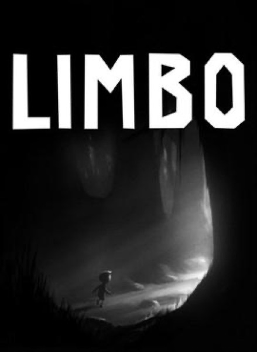

Platformer · 2010
Limbo
Monochrome dread, silhouettes, and traps that only teach by killing you.

Cover: Wikipedia: Limbo (video game)
Facts
- Released
- 2010-07-21
- Genre
- Puzzle-Platformer
- Category
- Platformer
- Platforms
- Mobile, Nintendo, PC, PlayStation, Xbox
- Developers
- Playdead
- Publishers
- Playdead, Xbox Game Studios
PC requirements
- Minimum
- [object Object]